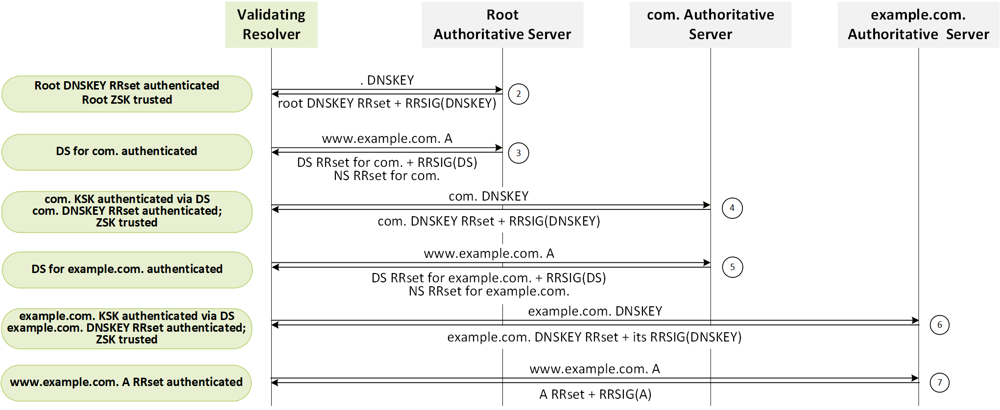
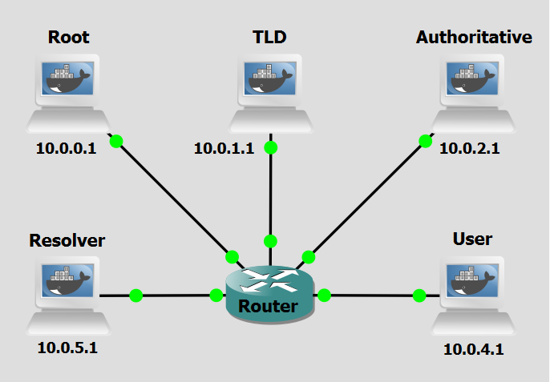

Background
The Domain Name System Security Extensions (DNSSEC) were developed to tackle persistent security issues within DNS, especially its deficiencies in authentication and integrity. DNSSEC introduces a set of extensions to DNS, focused on ensuring data integrity and authenticating the origin of data.
DNSSEC uses asymmetric (public-key) cryptography, such that each DNS zone has a Zone Signing Key (ZSK) and a Key Signing Key (KSK). The ZSK is used to sign the zone's resource record sets (RRsets). The KSK is used to sign the ZSK itself. The public part of each key is published in the zone via DNSKEY records. There are five DNS record types added by DNSSEC:
- RRSIG: A digital signature for a set of DNS records (an RRset), generated using the private ZSK. Resolvers can verify these signatures to confirm authenticity.
- DNSKEY: Holds a public key used to sign RRSIGs. Each zone usually publishes two: a KSK and a ZSK.
- DS Records: Delegation Signer (DS) records connect a child zone to a parent zone, establishing a chain of trust from the root.
- NSEC/NSEC3: These are used to provide authenticated denial of existence, preventing attackers from falsifying non-existent domains.
The widespread adoption of DNSSEC is contingent upon support from both DNS resolvers and authoritative servers. Importantly, the client does not need to possess any certificate. Instead, trust is established through a hierarchical chain of trust, as described below. A significant breakthrough occurred in July 2010 with the signing of the root zone, facilitating the complete establishment of the DNSSEC chain of trust. This chain of trust operates hierarchically. Each DNS zone's authenticity is validated by the zone above it, ensuring a secure and authenticated path from the root to individual domains. This process guarantees that DNS information remains untampered during transit. The root zone's public KSK is pre-configured in most validating DNS resolvers and serves as the trust anchor.

The validation process, as shown in Figure 1, proceeds as follows:
- Step 1: The resolver queries the root zone for the DNSKEY RRset.
- Step 2: The Root server returns the DNSKEY RRSET that includes the RRSIG, the public KSK and the public ZSK.
- Step 3: The resolver uses the root public KSK to verify the RRSIG. If the signature is valid, the resolver now trusts the root public ZSK.
- Step 4: The ZSK is used to verify RRSIGs (validating) on other records in the root zone, such as the DS record for a TLD (e.g., .com).
- Step 5: The resolver then queries the .com zone for its DNSKEY RRset.
- Step 6: .com Server returns its DNSKEY RRset
- Step 7: The DNS Resolver then checks that the KSK in the .com DNSKEY RRset matches the hash in the DS record.
- Step 8: If it matches, the resolver uses the .com public KSK to verify the RRSIG over the .com DNSKEY RRset.
- Step 9: The .com public ZSK is then trusted and used to validate records like the DS for example.com. This process continues down the DNS hierarchy until the final domain is validated.
The resolver validates each link in the chain by fetching the appropriate DNSKEYs and DS records, validating RRSIGs with the correct public keys, and confirming that the hashes match the DS record in the parent zone. If any of these validation steps fail, the DNS response is considered fraudulent and is not returned to the client.
Objectives
Our goal with the following configurations is to establish a chain of trust that enables the use of DNSSEC. To achieve this, we will begin at the authoritative server for the domain example.com and then ascend the DNS hierarchy. Finally, we will configure a trust anchor in the resolver. In a real-world environment, machines can be updated at any time. Tasks such as signing zone files and generating and submitting DS records (from child zones to parent zones) must be repeated whenever changes are made to the zone file data. Due to its repetitive nature, many registries and registrars use the Extensible Provisioning Protocol (EPP) to automate DS record submission, thereby streamlining the process.
Lab Prerequisites & Network Configuration

In the GNS3 project showed in Figure 2, you will need to add in the following topology that uses six key nodes (be sure to previously check the Lab Setup Guide):
| Node Name | Role | IP Address | Subnet |
|---|---|---|---|
| Root Server | Root Zone ( . ) nameserver (BIND) | 10.0.0.1 | 10.0.0.0/24 |
| TLD Server | Top-Level Domain (.com) nameserver (BIND) | 10.0.1.1 | 10.0.1.0/24 |
| Authoritative Server | Authoritative nameserver for example.com (BIND) | 10.0.2.1 | 10.0.2.0/24 |
| User | Client of the Resolver | 10.0.4.1 | 10.0.4.0/24 |
| Resolver | Recursive DNS Server (BIND) | 10.0.5.1 | 10.0.5.0/24 |
Phase 1: Configuring the Authoritative Server for example.com
The Authoritative Server (10.0.2.1) hosts the example.com zone and is the lowest-level server in the chain-of-trust. This is where we initiate the DNSSEC signing process.
Step 1.1: Basic Zone Setup
On the Authoritative Server,
1 - Define the Zone in named.conf.local:
nano /etc/bind/named.conf.local
zone "example.com" {
type master;
file "/etc/bind/db.example.com";
allow-update { none; };
check-names ignore;
};
Step 1.2: Create the Unsigned Zone File
On the Authoritative Server,
1 - Create the db.example.com zone file:
nano /etc/bind/db.example.com
$TTL 1h
@ IN SOA auth.example.com. hostmaster.example.com. (
2026090801 ; serial
3H ; refresh
15M ; retry
1W ; expire
1H ) ; minimum
IN NS auth.example.com.
auth IN A 10.0.2.1
www IN A 10.0.3.1
Question
What is the purpose of the auth A record (10.0.2.1)?
Answer
It ensures the nameserver auth.example.com can be resolved within the zone itself (glue record).
Phase 2: Signing the Authoritative Zone
DNSSEC requires two types of keys: the KSK (Key Signing Key, used for signing DNSKEY records) and the ZSK (Zone Signing Key, used for signing all other records).
Step 2.1: Generate DNSSEC Keys
Generate the KSK and ZSK for example.com. We use the ECDSAP256SHA256 algorithm (Algorithm 13).
On the Authoritative Server,
cd /etc/bind
1 - Generate the ZSK (Zone Signing Key):
dnssec-keygen -a ECDSAP256SHA256 -b 256 -n ZONE example.com
This creates two files, one ending in .key (public) and one in .private (private). Note the filename, e.g., Kexample.com.+013+12345.key.
2 - Generate the KSK (Key Signing Key):
dnssec-keygen -a ECDSAP256SHA256 -b 256 -n ZONE -f KSK example.com
Kexample.com.+013+54321.key. This KSK key ID will be used to create the DS record later.
Step 2.2: Include Keys in the Zone File
Include the public parts of the KSK and ZSK into the db.example.com file.
On the Authoritative Server,
1 - Edit db.example.com:
nano /etc/bind/db.example.com
2 - Below the $TTL line, add:
$INCLUDE Kexample.com.+013+<ZSK_ID>.key ; ZSK
$INCLUDE Kexample.com.+013+<KSK_ID>.key ; KSK
Where <ZSK_ID> is the ID from the first key generated, <KSK_ID> is the ID from the second key generated.
This creates two files, one ending in .key (public) and one in .private (private). Note the filename, e.g., Kexample.com.+013+12345.key.
Step 2.3: Sign the Zone
Use the KSK and ZSK to sign the zone, creating RRSIG records for every other record.
On the Authoritative Server,
1 - Sign the Zone:
dnssec-signzone -o example.com -k Kexample.com.+013+<KSK_ID>.key -N increment /etc/bind/db.example.com Kexample.com.+013+<ZSK_ID>.key
db.example.com.signed.
2 - Update named.conf.local:
# Change:
file "/etc/bind/db.example.com";
# TO:
file "/etc/bind/db.example.com.signed";
Changes the file entry to point to the signed file.
3 - Restart BIND:
pkill named && named -c /etc/bind/named.conf
Step 2.4: Generate the Delegation Signer (DS) Record
The DS record is the critical security link between the child and parent zone. It must be provided to the parent zone (TLD) for delegation. Generate the DS record using the KSK public key.
On the Authoritative Server,
1 - Generate DS record (using KSK public key):
dnssec-dsfromkey Kexample.com.+013+<KSK_ID>.key
example.com. IN DS 12345 13 2 9AAF96127BFE1C5BE61DC60E5776561556145B
Copy the line and save it.
Phase 3: Configuring the TLD Server (.com)
The TLD Server (10.0.1.1) hosts the com zone and needs the DS record from the Authoritative server.
Step 3.1: Basic Zone Setup
On the TLD Server,
1 - Define the Zone in named.conf.local:
zone "com" {
type master;
file "/etc/bind/db.com";
allow-update { none; };
check-names ignore;
}
2 - Create db.com:
$TTL 1h
@ IN SOA tld.com. admin.com. (
2026090803 ; serial
3H ; refresh
15M ; retry
1W ; expire
1H ) ; minimum
IN NS tld.com.
tld IN A 10.0.1.1
example.com. IN NS auth.example.com.
auth.example.com. IN A 10.0.2.1
Step 3.2: Signing the TLD Zone
This process is identical to Phase 2, but for the com TLD zone.
On the TLD Server,
1 - Generate Keys (KSK and ZSK):
cd /etc/bind
dnssec-keygen -a ECDSAP256SHA256 -b 256 -n ZONE com
dnssec-keygen -a ECDSAP256SHA256 -b 256 -n ZONE -f KSK com
<com_ZSK_ID> and <com_KSK_ID>, respectively.
2 - Include Keys in db.com:
$INCLUDE Kcom.+013<com_ZSK_ID>.key ; ZSK
$INCLUDE Kcom.+013+<com_KSK_ID>.key ; KSK
$TTL, using the new key IDs.
3 - Sign the Zone and Update named.conf.local:
dnssec-signzone -o com -k Kcom.+013+<com_KSK_ID>.key -N increment /etc/bind/db.com Kcom.+013+<com_ZSK_ID>.key
nano /etc/bind/named.conf.local
# Change:
file "/etc/bind/db.com";
# TO:
file "/etc/bind/db.com.signed";
Changes the file entry to point to the signed file.
Step 3.3: Publish the Child's DS Record
Paste the DS record generated in Step 2.4 into the db.com file.
On the TLD Server,
1 - Edit db.com:
Go to the end and paste the DS record from the Authoritative server (Step 2.4)
Example: example.com. IN DS 12345 13 2 9AAF96127BFE1C5BE61DC60E5776561556145B
IMPORTANT: Increment the SOA serial number (e.g., from 2026090803 to 2026090804).
Question
Why must we increment the SOA serial number after making changes to the zone file?
Answer
It is a good practice, that signals to other DNS servers that the zone data has been updated and needs to be reloaded/transferred.
2 - Re-sign and Restart BIND:
The db.com file has changed, so the signed file must be regenerated.
dnssec-signzone -o com -k Kcom.+013+<com_KSK_ID>.key -N increment /etc/bind/db.com Kcom.+013+<com_ZSK_ID>.key
pkill named && named -c /etc/bind/named.conf
Step 3.4: Generate the TLD DS Record
Generate the DS record for the com zone using its KSK public key. This will be provided to the Root server.
On the TLD Server,
1 - Generate DS record (using TLD KSK public key):
dnssec-dsfromkey Kcom.+013+<com_KSK_ID>.key
Phase 4: Configuring the Root Server (.)
The Root Server (10.0.0.1) hosts the Root zone (.) and needs the DS record from the TLD.
Step 4.1: Basic Zone Setup
On the Root Server,
1 - Define the Zone in named.conf.local:
zone "." {
type master;
file "/etc/bind/db.root";
allow-update { none; };
check-names ignore;
};
2 - Create db.root:
$TTL 1h
@ IN SOA root. root. (
2026090801 ; serial
3H ; refresh
15M ; retry
1W ; expire
1H ) ; minimum
IN NS root.
root. IN A 10.0.0.1
com. IN NS tld.com.
tld.com. IN A 10.0.1.1
Step 4.2: Signing the Root Zone
Generate the Root keys, sign the zone, and publish the TLD DS record.
On the Root Server,
1 - Generate Keys (KSK and ZSK):
cd /etc/bind
dnssec-keygen -a ECDSAP256SHA256 -b 256 -n ZONE .
dnssec-keygen -a ECDSAP256SHA256 -b 256 -n ZONE -f KSK .
<root_ZSK_ID> and <root_KSK_ID>, respectively
2 - Include Keys in db.root:
$INCLUDE Kcom.+013<root_ZSK_ID>.key ; ZSK
$INCLUDE Kcom.+013+<root_KSK_ID>.key ; KSK
$TTL, using the new key IDs.
3 - Publish the TLD's DS Record (from Step 3.4) in db.root:
Example: com. IN DS 64646 13 2 CC761F2D5768B440B5E827AF3EF3D1A77D91EE6C0DC62FDB422C39BE20E77628
IMPORTANT: Increment the SOA serial number.
4 - Sign the Zone and Update named.conf.local:
dnssec-signzone -o . -k K.+013+<root_KSK_ID>.key -N increment /etc/bind/db.root K.+013+<root_ZSK_ID>.key
nano /etc/bind/named.conf.local
# Change:
file "/etc/bind/db.root";
# TO:
file "/etc/bind/db.root.signed";
5 - Restart BIND:
pkill named && named -c /etc/bind/named.conf
Step 4.3: Extract the Root Trust Anchor
The Root KSK is the Trust Anchor for the entire DNSSEC hierarchy. The Resolver must be configured to trust it.
On the Root Server,
1 - Display the KSK public key data:
cat K.+013+<root_KSK_ID>.key
. IN DNSKEY 257 3 13 <LONG_STRING_OF_RANDOM_CHARACTERS_KEY_DATA>
Copy the last line of the output (the one containing the random characters key string).
Phase 5: Configuring the Resolver and DNSSEC Validation
The Resolver (10.0.5.1) is the recursive server that will perform DNSSEC validation. This machine needs to know what Root machine to trust in order to then trust the subsequent chain-of-trust.
Step 5.1: Configure Root Hints and BIND Options
On the Resolver,
1 - Configure Root Hint File db.root:
By default, BIND uses standard hints. We must structure it to use our simulated Root.
. 3600000 IN NS .
. 3600000 IN A 10.0.0.1
The named.conf.default-zones should already contain the zone "." { type hint; file "/etc/bind/db.root"; }; entry.
2 - Configure BIND options file, named.conf.options:
Insert these lines inside the options block.
recursion yes;
allow-recursion { any; };
allow-query { any; };
listen-on { any; };
dnssec-validation auto;
Question
What does the directive dnssec-validation auto; do?
Answer
It instructs BIND to automatically attempt to validate all DNS responses using DNSSEC and reject (return SERVFAIL) unvalidated or broken responses, relying on trust anchors loaded via managed-keys or bind.keys.
Step 5.2: Install the Root Trust Anchor
On the Resolver,
1 - Create a bind.keys file and paste the Root KSK (Trust Anchor) copied in Step 4.3 :
nano /etc/bind/bind.keys
Example format: . initial-key 257 3 13 “<LONG_STRING_OF_RANDOM_CHARACTERS_KEY_DATA>”;
2 - Restart BIND:
pkill named && named -c /etc/bind/named.conf
Phase 6: Final Validation Test
The User machine or the Resolver itself should now be able to query the system and verify the authenticity of DNS Messages using the DNSSEC chain of trust.
Step 6.1: Run the DNSSEC Query
Query for a record in the signed zone, forcing DNSSEC details to be shown. Be sure to use a Wireshark capture between the Resolver and the central Router to see the various messages traded between the Resolver and the DNS hierarchy.
On the Resolver or User,
1 - Run a query
dig www.example.com @10.0.5.1 +dnssec +multi
Look at the DNS header flags in the response. If the DNSSEC chain is valid, the response should include the ad (Authenticated Data) flag.
;; ->>HEADER<<- opcode: QUERY, status: NOERROR, id: XXXX
;; flags: qr rd ra ad; QUERY: 1, ANSWER: 2, AUTHORITY: 4, ADDITIONAL: 5
Notice the difference in quantity between a normal DNS lookup and a DNSSEC lookup.
Question
If the query fails or returns a SERVFAIL status, where in the hierarchy is the most likely location of the DNSSEC error?
Answer
The most likely error is a mismatch between a DS record in the parent zone and the KSK key in the child zone, or the Trust Anchor on the Resolver is incorrect.
Question
Do you think the quantity of DNS Message necessary for DNSSEC to work influenced its adoption in the real world? Why or why not?
Answer
Yes, the increased quantity of DNS messages required by DNSSEC—due to larger responses and additional validation steps—has likely slowed its adoption. The overhead can strain networks, increase latency, and complicate deployment, especially for resource-constrained systems. Many organizations weigh these costs against the security benefits, often opting for simpler alternatives. Complexity and performance trade-offs remain key barriers.
Step 6.2: SERVFAIL troubleshooting
If the query returns a SERVFAIL, first verify if every machine on the DNS hierarchy is working properly.
On each nameserver,
1 - Check if BIND is active
netstat -tulnp | grep 53
It should show some ports with the tag “LISTEN”
2 - Check BIND debugging info:
If nothing was returned then check why the service isn't working:
named -c /etc/bind/named.conf -g -d 9
3 - Fix issues:
Most probably there was so problem in generating the keys, signing the zone files or with the DS records passed on to other DNS Hierarchy servers, fix those issues by repeating the steps respective to the configuration of the faulty machine.
4 - Restart BIND:
After the issue is fixed, kill the previous BIND service running (if any) and restart a new one, run:
pkill named && named -c /etc/bind/named.conf